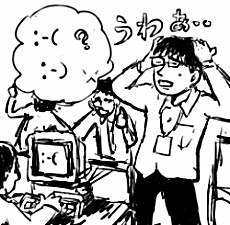
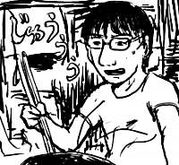
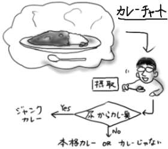

吉崎観音『ケロロ軍曹5巻』(角川エースコミックス)を買って帰り、ゲラゲラ読んでました。巻末おまけ漫画がおもしろすぎです。7,8回くらい読み直してたら夜中の2時になっていました(読み過ぎ)。
昼間、会社でグループメンバ宛のメールにあまり深く考えずに「:-(」を使ったところ(考えよう)、ちょっと離れた席の人達の間でフェイスマークの意図について深読み大会が始まり、僕がひっそりと毒を吐いていることになっていました。ショック！
僕が通りかかった時、googleで「:-(」や「face mark」などのキーワードでを検索している人、紙に「:-(」「:-)」「`^'」などをメモしてああでもないこうでもないと検討している人達、など大変な感じになっていました。ぼ、僕そんなつもりじゃ…。

googleで「:-(」や「:-)」を検索しても、何も出てこない(結果が0件ということではなく、本当に何も出てこない)ことが分かったのは収穫ですが、失った物に比べてあまりにも小さい収穫でした。
googleにおいて「:-(」はメタキャラクタ(:はサイト検索とかの指定、-は検索抑制)の集合なのでまともに結果が出ないのは分かるのですが、それにしても全く何のメッセージも出ないのと、クォート(")しても何も出ないのでビビります。(後日追記)
今日は、スーパーが閉まる前に滑り込んで半額食品を物色しました。カツオのたたき(+1)半額も相当ひかれるものがあったのですが、日持ちを考えて結局普通に牛肉半額(+2)を買いました(カッコ内は賞味期限修正)。同じ物を二日連続で食べるのは避けたいですからね。しかし、今度こそ機会があったらカツオのたたきを半額で手に入れてやろうと思います。
ボルタックな気分で帰宅した後、ニンニク(+2)を刻んで、傾けたフライパンの端で揚げ、取り出してから肉を半分ほど投下し、しわしわになった冷蔵庫のピーマン(-1)と炒め、揚げたニンニクを再投入してから塩胡椒(+1)を振って味を整え、サラダ菜を敷いた皿へ移して、プチトマトを盛り付けます。インスタント赤だしを、湯の沸いた鍋に投下し、なめこ(+4)を放り込むと一気に豪華な味噌汁へ変わります(カッコ内は美味修正)。

などと黒田硫黄の漫画っぽく在り合せでダイナミックな料理を繰り広げてみたりしました。やっぱり自炊するとうまいものが食えるなぁ(自分好みに味付けするので当たり前)と満足していたのですが、飲み物を買うのを忘れていました。気付いた時には、もうすでにひと風呂あびてパジャマに着替えているのですが、さて…(マピロ・マハマ・ディロマト！)。
大変だ！あのトプカのレトルトカレーが売られています。さすがにサイコロステーキはレトルトに出来ないので、ポークカレーでした。買ってないですが、今度機会があったら買おうと思います。期待しています(尿に出ないのを)。350円もします。
風呂から上がってみると飲み物が切れていたので、仕方なく自動販売機に向かいます。最寄りの自動販売機まで100mくらいあるので、半乾きのボサボサ髪かつ寝巻にツッカケという格好で出かけるにはかなりのリスクを伴います。深夜というプラス修正をうまく利用し、人目につかないように素早く行動するんだ！車が通りかかったら電柱の影に隠れろ！
…余計怪しい。
同期女子が出張でやってくるというので、同期飲みが行われました。しかし、やって来た同期女子はどうも僕の顔を見て話してくれなかった気がします…。きっと…気のせいだよね…。
飲み屋では服や髪に匂いがつくので、帰宅してすぐに風呂に入ったのですが、それなりに酔っていたために風呂でヒゲを剃って血まみれになったり、風呂上がりに髪をかわかそうとして頭髪から焦げくさい匂いが！とか散々な目に遭いました。
こんなボロボロの時は「あずまんが大王」しかないとばかりに、がっぷり四つでTVにかじり付いて放送開始を待っていたら「オレ達のWell歌夢(ウェルカム)」というあんまりなタイトルの歌謡曲番組が放映されていて、とてもしょんぼりしました。これじゃ「恥ずManが歌うよう」だよ！(超無理矢理)
しかし、アニメで見始めてから「あずまんが大王」がグングン好きになって来ている自分を発見して少々困惑気味です。「年を取ってかかるはしかは重い」という言葉が当てはまる状態に陥らないように自戒しようと思います。
初夢話のあまりのシュールさに少々ついて行けなさを感じて戸惑いましたが、ちよの父の声が若本規夫だったのが相当よかったです(ダメだ…)。
今日こそ自転車で大宮へ出かけようと思っていたら、またしても夕立ちが！しかし速効で止んだので結局決行しました(挨拶)。
大宮へ向かう埼玉県道(歩道のないのが特徴)沿いでは、民家から夕飯の支度の懐かしい匂いが漂っていたり、車やスクーターが迷惑そうに僕を追い抜ぬいて行ったりで、主に癒しと嫌しを同時に受けてました。しかし埼玉県の道はただでさえ歩道がないくせに路側帯が現れたり消えたりし、なおかつ、凹凸で状態が悪いです。免許書換え時に「埼玉県は交通事故発生件数が上位なので安全運転を心掛けましょう」というビデオ(主演:愛川欽也)を見せられたりしたのですが、交通事故のほとんどは道路のせいだと思います。Death。
大宮では浮いた電車代で松屋(また！)のチキンカレーとサラダを食いました。ジャンクカレーも手間をかけて作った本格的なカレーも同様に好きなのですが、ジャンクカレーと本格カレーの違いは、食った後の尿にカレー臭が混じるか混じらないかです。松屋のチキンカレーでもレトルトカレーでも、用を足すと明らかにカレー臭が出るのでびびります。でも、CoCo壱のカレーでは出ないので、CoCo壱は本格カレーです。さすが専門店(なんとなく間違い)。以前、友人に「レトルトカレー食ったら尿がカレーの匂いになるよね」と言ったところ全力で否定されたので、僕だけがジャンクカレー試験紙みたいな特殊な能力を持っているのでしょうか。ちなみに社員食堂のスパイスの味がしないマズカレーでも出ないのですが、それはカレーじゃないからだと思います。

おとといはいつもより早めに就寝することで多めに睡眠時間を取ったということは昨日の日記でお伝えしましたが、昨日は早朝補講のために早めに寝ようと思いつつ、前日多めに取った睡眠時間のせいでなかなか寝付けず、結局いつもより夜更かししてました(挨拶)。どんな悪癖でも規則正しくというのがよいということなんだなぁ(昨日認識したことと矛盾)。
財布に2円しかない(502円 - (牛丼並280円 + 卵50円 + 生野菜サラダ90円) - (昼食の食券不足分50円) - (共同コーヒー代30円) = 2円)ので、会社を早めに抜け出してして銀行でお金をダウンロード。ついでに大宮まで買い物に出かけました。
本屋で以下のものを購入。ほくほくです。
- 『ハッカーズ大辞典 改訂新版』(ASCII Books)
前の版はとっくに廃刊になっていたのですが、まさかここに来て再版される(しかも改訂されて)とは思わなかったので思わず購入です。学生時代はこの手の文化にはあまり興味がなかったので買い逃していたのですが、就職してからオールドな計算機に(ダム端末経由で)触れる機会もあり、押さえておくのも悪くないかと思いました。装丁は前の方がいい気がします(カバーがないのでめくりやすくて)。こういうのはWebで読めても本形式で持っていた方がよい(万能感が出るから)気がします。万能感は大事にしていきたい。
- 黒田硫黄『茄子 2巻』(講談社アフタヌーンコミックス)
月単位とは言え、なんでこんなのが量産できるのか。黒田硫黄の漫画のコマ運びはとても映画的で、その格好良さには思わず痺れるしかないです。
- ニール・スティーブンスン『クリプトノミコン(2) -エニグマ』(早川文庫SF)
まだ(1)も読んでないのに！(結局)
せっかく大宮まで出て来たので松屋で晩飯を食うことにしました。僕は、セブンイレブンでも200円くらいしそうな大きめの生野菜サラダが100円でもっくもっくと食べられるうえに、この手のお店ではメニューが多めの松屋が大好きなのです(学生感覚)。今日は牛焼肉定食を選んだのですが、なんか二週間ぶりくらいにちゃんと焼いた肉を食った気がします。たまに焼いた肉を食うとうまいなぁ。しかし、焼肉だハンバーグだの定食が出てくるのに厨房にはフライパンが見当たらず、肉はよく分からないデカい鉄板で焼かれている(ハンバーグは電子レンジ)のが訳分からなくて素敵です。
松屋の隣にはタイトーのゲーセンがあるので入ってみたところ、「斑鳩」が5機設定に(喜)！画面もいつも行き着けのゲーセンより明るくて奇麗だし、今後はこっちでやりこもうかと思います。エクステンドは200万→800万となっていますが、コンティニューを考えるとこちらの方が得です。この手のゲームはゲームオーバーになっても1回だけコンティニューして先をプレイしておくことが上達の役に立つのです。このゲーセンは斑鳩のすぐ横がDDRをはじめとする音ゲー地帯になっていて、プレイしていると浮き世から捨てられし感が増幅するところもポイントが高いです(感情移入しすぎです)。
しかし今日は本も買ったし、松屋で飯も食ったし、ゲーセンも行ったしいいことずくめだなぁ(早朝に補講を受ける羽目になったことを忘れています)と思っていたら、先週から毎週見ようと決意していた「あたしンち」を見逃しました(地味なオチ)。
昨日は微妙に頭痛がしたので早めに寝たところ、今日は頭もそれなりにスッキリ！7時間くらい睡眠時間を取ると翌日辛くない(自分用メモ)。など、かなり今さらっぽい事実認識をしたところでこんにちわ(挨拶)。ちなみに普通は4〜5時間です。
今日も脳内生成コードをペチペチと打ち込んでいたら、上司が僕のところまでやって来て聞きました。
「ミズグチくん、ISOの教育は？」(首をかしげながら)
「あ！昨日！」(目を見開いて)
「…受けて、ません…」(うなだれながら)
一応念の為に解説しておきますと、「弊社は環境問題に取り込んでますよ？」ということを対外的にアピールするために、あらゆる企業がこぞって取得しているISO14001という規格があるんですが、取得したこの規格を維持するためには環境改善活動を継続して行わなければならないことになっており、それはつまり、去年より環境係数(排出ゴミ量とか消費電力とか)が悪かったら取り上げちゃうよ？ということなので、取り上げられないように毎年全社員に教育を行って環境改善活動を徹底させるのです。というか全員に教育を行わないとその時点で取り上げられます(多分)。僕は昨日その教育を受ける手はずだったのですが、すっかり頭から抜け落ちていました。前日までは覚えていたのに(「宿題はやったんですけど、持ってくるのを忘れました」と言い訳をする小学生のように)。
結局、それをフォローするために、明日早朝特別補講が催されます。へこー。いつもより1時間30分くらい早く出社しなきゃ！(いつもが遅すぎです)
--------(今日は2部構成)---------
帰宅途中に確認してみると財布には500円玉が1枚(と1円玉が2枚)しか入ってないし、冷蔵庫の中身は昨日片付けてしまったしで進退極まった感じだったので、考えに考えて(20秒間)、吉牛に入りました。殺伐とした(財布が)食事の開始です。

今日店内に居たのは、男性側が主張したので仕方なく女性側が付いて来たという感じの牛丼カップル(以下、肉ップル)を除けば、サラリーマンにサラリーマン、あとサラリーマンとサラリーマンと、そしてサラリーマンでした。ちなみにサラリーマンとはスーツを着た人を差します。
前回(02.4.10)のように、他人と目を合わせずに食事を終わらせるために考えたことはおおよそ以下のようなことです：
- なんで吉牛の七味唐辛子は赤じゃなくて黄色なのかなぁ
- 今さら吉牛の紅生姜の底の方が怖いという話題を口に出したくはないなぁ
- フラグ類は全部内部オブジェクトで包んでまとめてロックかけた方がスッキリするなぁ
- 生野菜サラダのドレッシング、しょっぱいなぁ
- 肉ップルの女性の方がベンディングマシンから注がれる味噌汁見てびびってるなぁ
…最後ので失敗。
夜中にコンビニまで出かけた帰り、交差点で黒猫が信号待ちをしているのを見た時は、その幻想的な光景に思わず目を奪われました。デジカメを持って出なかったのが悔やまれます。
…本当に待ってたんだよう。背筋をぴんと延ばして赤信号を注視してました。はっきり言って僕より姿勢がよかったです。
風呂上がりに、買い置きしてあった キュウリ(3本100円)の残り1本が萎びていたので塩振って丸かじりするのは、あきらかに贅沢からは程遠いです。